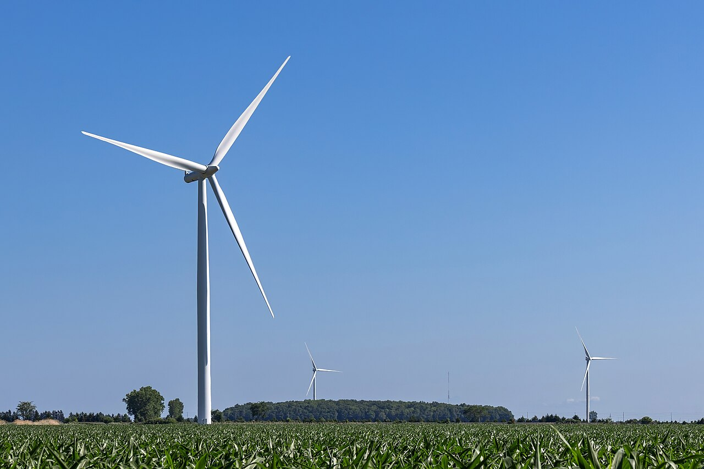

كتاب العلوم — الجزء الأول من المقرر — طبعة ١٤٤٧ / ٢٠٢٥
مصادر الطاقة
الصف الخامس الابتدائي الوحدة الثالثة: الأرض ومواردها الفصل السادس: حماية موارد الأرض — الدرس الأول
إعداد: نايف المطيري
موقع الدرس
أين نحن من الكتاب؟
ص ١٧٤
الوحدة الثالثة
الأرض ومواردها
الفصل السادس
حماية موارد الأرض
الدرس الأول
مصادر الطاقة
السؤال الأساسي: ما المصادر التي يحصل منها الإنسان على الطاقة؟
أهداف التعلم
ماذا سأتعلم في هذا الدرس؟
أُعرِّف الأحفورة والوقود الأحفوريَّ.
أَصِف مراحل تكوُّن الفحم والنفط والغاز.
أُبيِّن كيف يُستعمل الوقود الأحفوريُّ.
أُفرِّق بين الموارد المتجدِّدة وغير المتجدِّدة.
أَصِف الطاقة الشمسية وطاقة المياه وطاقة الرياح.
أذكر طرق المحافظة على الطاقة وترشيد استهلاكها.
أُوظِّف مهارة حقيقة أم رأي.
تمهيد
لنبدأ بسؤال
السيارة تسير بالبنزين… فمن أين جاءت الطاقة التي في هذا البنزين أصلًا؟
من الشمس! فقد اختزنتها نباتات ومخلوقات عاشت قبل ملايين السنين. لنتعرَّف كيف.
معرفة سابقة
ما أعرفه من قبل
دورة الكربون
يُحجز الكربون في الوقود الأحفوري في باطن الأرض.
الصخور الرسوبية
طبقات تتراكم فوق البقايا المدفونة.
البناء الضوئي
النباتات تستعمل طاقة الشمس لصنع الغذاء.
المفردات
مفردات الدرس
ص ١٧٦
الأحفورة
بقايا المخلوقات الحية التي عاشت في الماضي أو آثارها المحفوظة في الصخور الرسوبية.
الوقود الأحفوريُّ
الفحم الحجريُّ والنفط والغاز الطبيعيُّ.
الموارد غير المتجدِّدة
موارد الطاقة التي تحتاج إلى ملايين السنين لكي يعاد إنتاجها.
الموارد المتجدِّدة
موارد طاقة دائمة وغير محدودة.
مهارة القراءة في هذا الدرس: حقيقة أم رأي.
أستكشف — نشاط استقصائي
كيف تحرِّك الرياح الأجسام؟
ص ١٧٥ — نشاط الكتاب
أكوِّن فرضيَّة: كم مشبك ورق يمكن أن أحرِّك إذا نفخت على نموذج مروحة؟ أكتب إجابتي على شكل فرضية على النحو الآتي: كلَّما زادت سرعة الرياح المؤثرة في المروحة فإن ……
أحتاج إلى:
قطعة ورق ٨سم × ١٥ سم
قلم رصاص غير مستعمل
شريط لاصق
أربع قطع من الورق ٨سم × ٥سم
مشابك ورق
خيط
أختبر فرضيَّتي:
ألفُّ قطعة الورق ٨ سم × ١٥ سم حول قلم الرصاص غير المستعمل، وأضع اللاصق عند الأطراف بمساعدة صديق، بحيث تأخذ الورقة شكل الأنبوب.
ألصق قطعة ورق ٥ سم × ٨ سم على بعد ٥ سم من طرف القلم لأشكِّل ريشة نموذج المروحة. وأثبت بقية القطع الورقية بالطريقة نفسها على أبعاد متساوية.
أربط المشبك بخيط ألصق طرفه الآخر بالأنبوب، في الجهة البعيدة عن ريشات العجلة.
أمسك قلم الرصاص من طرفَيه، وأنفخ على ريشة العجلة. ماذا حدث لمشبك الورق؟
أجرِّب. كم مشبكًا يمكن أن أضيف حتى يصبح من غير الممكن رفعُها بالنفخ على الريشات؟
أستكشف — نشاط استقصائي
أستخلص النتائج · أستكشف أكثر
ص ١٧٥ — أسئلة الكتاب
٦. كيف يمكن لطاقة الهواء الناتج عن النَّفخ أن يرفع مشبك الورق؟
سؤال الكتاب — ص ١٧٥الهواء المندفع يصطدم بريشات العجلة فيدفعها، فتتحوَّل طاقة حركة الهواء إلى طاقة حركة دورانية في الأنبوب والقلم. ويلتفُّ الخيط حول الأنبوب فيُرفع المشبك. وهذا هو مبدأ عمل مراوح طاقة الرياح التي تحوِّل طاقة الرياح إلى طاقة كهربائية.
٧. أستنتج. ما تأثير عرض ريشات العجلة في عدد المشابك التي تستطيع المروحة رفعها؟
سؤال الكتاب — ص ١٧٥إجابة نموذجية مقترحة: كلَّما زاد عرض الريشات زادت المساحة التي يدفعها الهواء، فتزداد القوة الدافعة للمروحة، فتستطيع رفع عدد أكبر من المشابك. أمَّا الريشات الضيِّقة فتلتقط قدرًا أقلَّ من طاقة الهواء فترفع مشابك أقلَّ.
أستكشف أكثر: ما النتائج التي يمكنني الحصول عليها إذا استعملت ريشات ذات شكل مختلف؟ أفكر في أشكال أخرى للريشات وأختبرها لأرى ما إذا كانت تعطي نتائج أفضل.
منذ ملايين السنين تستعمل النباتات طاقة الشمس لنموِّها، وينتقل جزء من هذه الطاقة إلى الحيوانات التي تتغذَّى على النباتات. وبعد موتها تُدفن في التربة، وتتشكَّل فوقها عدة طبقات من الرسوبيات.
وفي ظروف معينة يمكن أن تُحفظ بقايا المخلوقات الحية التي عاشت في الماضي أو آثارُها في الصخور الرسوبية لتكوِّن الأحافير.
الشرح والتفسير
تكوُّن الفحم الحجريِّ
ص ١٧٦
عند دفن النباتات فإنَّ الوزن الهائل لطبقات الرسوبيات التي تتراكم فوقها يؤدِّي إلى تعرُّض بقايا النباتات المدفونة للحرارة والضغط؛ لذا يتكوَّن نوع من الفحم الرديء يسمَّى الخُثَّ. وبتراكم الطبقات وازدياد الضغط والحرارة يتحوَّل الخُثُّ إلى الفحم الحجريِّ.
مراحل تكوُّن الفحم
١
المخلوقات الميتة تكوِّن الخُثَّ
٢
تراكم الرسوبيات فوق الخُثِّ
٣
تحوُّل الخُثِّ إلى فحم حجريٍّ بفعل الضغط
الشرح والتفسير
تكوُّن النفط والغاز
ص ١٧٦
أمَّا عند دفن المخلوقات البحرية تحت الرسوبيات في قاع المحيط فإنَّ بقاياها تتحوَّل نتيجة الضغط والحرارة وتأثير البكتيريا إلى نفط وغاز طبيعيٍّ.
ويسمَّى كلٌّ من الفحم الحجريِّ والنفط والغاز الطبيعيِّ الوقود الأحفوريَّ.
مراحل تكوُّن النفط والغاز
١
سقوط المخلوقات البحرية الميتة إلى قاع البحر
٢
المخلوقات الميتة تُدفن في الرسوبيات
٣
الضغط والحرارة يشكِّلان النفط والغاز
أختبر نفسي
أسئلة الكتاب
ص ١٧٦
حقيقة أم رأي؟ الطاقة التي نحصل عليها من الوقود الأحفوريِّ مستمدَّة من طاقة الشمس. هل هذه العبارة حقيقة أم رأي؟
سؤال الكتاب — ص ١٧٦حقيقة؛ لأنها يمكن التحقُّق منها علميًّا. فالنباتات تستعمل طاقة الشمس لنموِّها، وينتقل جزء منها إلى الحيوانات، ثم تُدفن بقاياها وتتحوَّل بالضغط والحرارة إلى وقود أحفوريٍّ يختزن تلك الطاقة.
التفكير الناقد. لماذا لا يمكن العثور على الأحافير في الصخور النارية؟
سؤال الكتاب — ص ١٧٦لأن الأحافير تُحفظ في الصخور الرسوبية التي تتكوَّن بتراكم الرسوبيات فوق بقايا المخلوقات. أمَّا الصخور النارية فتتكوَّن من الصهارة المنصهرة شديدة الحرارة، وهذه الحرارة تدمِّر أيَّ بقايا أو آثار للمخلوقات الحية فلا يبقى منها أحفورة.
الشرح والتفسير
كيف يُستعمل الوقود الأحفوريُّ؟
ص ١٧٧
يعدُّ الوقود الأحفوريُّ مورد الطاقة الرئيس في الحياة المعاصرة؛ فمعظم الطاقة التي نحتاج إليها نحصل عليها من حرق الوقود الأحفوريِّ.
استعمالات مباشرة
التدفئة · النقل · الاحتياجات المنزلية · المصانع وغيرها.
توليد أنواع أخرى
كما يستعمل في توليد أنواع الطاقة الأخرى، ومنها الطاقة الكهربائية.
الشرح والتفسير
موارد الطاقة غير المتجدِّدة
ص ١٧٧
موارد الطاقة غير المتجدِّدة تشمل الوقود الأحفوريَّ بجميع أشكاله. وبسبب الاستهلاك السريع للوقود الأحفوريِّ ومحدوديَّته، ولأنَّه يحتاج إلى ملايين السنين لكي يعاد إنتاجه، فإنَّه سوف ينفَد في يوم من الأيام؛ لذا فإنَّه تجب حمايته وإدارته بكلِّ حكمة لكي تمتدَّ فائدته إلى الأجيال القادمة.
ومن طرائق الاستفادة منه بالشكل الأمثل والحدِّ من هدر الطاقة:
تحسين مواصفات الأبنية.
استعمال وسائل النقل العامِّ.
الاستفادة من المفقود الحراريِّ في محطات توليد الكهرباء في تزويد المجتمعات المحلية بالماء الساخن.
أختبر نفسي
أسئلة الكتاب
ص ١٧٧
حقيقة أم رأي؟ ينشأ الوقود الأحفوريُّ عن تحلُّل النبات والحيوان. هل هذه حقيقة أم رأي؟
سؤال الكتاب — ص ١٧٧حقيقة؛ فالكتاب يبيِّن أن بقايا النباتات المدفونة تتحوَّل بالحرارة والضغط إلى خُثٍّ ثم فحم حجريٍّ، وأن بقايا المخلوقات البحرية تتحوَّل بالضغط والحرارة وتأثير البكتيريا إلى نفط وغاز طبيعيٍّ. وهذه معلومات يمكن التحقُّق منها.
التفكير الناقد. أوضِّح كيف أستهلك الوقود الأحفوريَّ عندما أشاهد التلفاز؟
سؤال الكتاب — ص ١٧٧التلفاز يعمل بالطاقة الكهربائية، ومحطات توليد الطاقة تحرق مشتقات الوقود الأحفوريِّ لتوليد الكهرباء. فكلَّما شاهدت التلفاز مدةً أطول استُهلكت كهرباء أكثر، وأُحرق وقود أحفوريٌّ أكثر. ولذلك يُنصح بإطفاء الأجهزة الكهربائية عند عدم استعمالها.
الشرح والتفسير
كيف يمكن إنتاج الطاقة من الشمس والماء والهواء؟
ص ١٧٨
هناك طرائق أخرى لإنتاج الطاقة من موارد طاقة دائمة وغير محدودة تسمَّى موارد الطاقة المتجدِّدة، ومنها الطاقة الشمسية وطاقة المياه الجارية وطاقة الرياح.
ومن مزايا هذه الموارد أنها توفِّر طاقة نظيفة، ولا تلوِّث الهواء الذي نتنفَّسه.
الشرح والتفسير
الطاقة الشمسية وطاقة المياه
ص ١٧٨
الطاقة الشمسية
تُستعمل حاليًّا في أنحاء متعدِّدة من العالم؛ بسبب وفرتها. وتمتاز باستمرارها ما بقيت الشمس مشتعلةً. ويمكن استعمالها لإنتاج الكهرباء مباشرةً، أو لتسخين المياه.
طاقة المياه
المياه الجارية في الأنهار والجداول أو تلك المندفعة من السدود، وكذلك أمواج البحر، لها طاقة طبيعية كبيرة جدًّا. ويمكن استعمالها في توليد الكهرباء؛ حيث تُستغلُّ حركة الماء في تحريك المولِّدات الكهربائية التي تولِّد الطاقة بشكل مستمرٍّ ومتواصل ليلًا ونهارًا.
الشرح والتفسير
طاقة الرياح
ص ١٧٨
بدأ استعمال الرياح بوصفها موردًا للطاقة ينتشر في العالم على نطاق واسع. وتقنيتُه بسيطة للغاية؛ إذ تثبَّت أعمدة طويلة، يركَّب عليها مراوح تنقل حركتَها بنواقلِ حركةٍ إلى مولِّد كهربائيٍّ، ثمَّ تُنقل الكهرباء التي أنتجها المولِّد عبر الأسلاك وشبكات الكهرباء لتُستعمل في المنازل والمنشآت المختلفة.
وتكون جدوى هذه التقنية أكبر ما يمكن في المناطق التي تهبُّ فيها الرياح باستمرار.
أقرأ الصورة
سؤال الكتاب
ص ١٧٨
أيُّ طرق توليد الطاقة المبيَّنة في الصور يستخدم طاقة المياه؟ إرشاد: أنظر إلى المياه المندفعة.
سؤال الكتاب — ص ١٧٨الصورة التي تظهر فيها المياه المندفعة من السدِّ؛ فطاقة المياه المندفعة من السدِّ تتحوَّل إلى طاقة كهربائية. أمَّا الألواح الشمسية فتلتقط طاقة الشمس، والمراوح فتحوِّل طاقة الرياح إلى طاقة كهربائية.
أختبر نفسي
أسئلة الكتاب
ص ١٧٨
حقيقة أم رأي؟ سوف تدوم الطاقة الشمسية فترةً طويلةً. هل هذه حقيقة أم رأي؟
سؤال الكتاب — ص ١٧٨حقيقة؛ فالكتاب ينصُّ على أن الطاقة الشمسية «تمتاز باستمرارها ما بقيت الشمس مشتعلةً»، وهي من موارد الطاقة الدائمة وغير المحدودة. فهذه معلومة يمكن التحقُّق منها لا رأي شخصيٌّ.
التفكير الناقد. إذا نفد الوقود الأحفوريُّ فكيف يؤثر ذلك في حياتنا؟
سؤال الكتاب — ص ١٧٨الوقود الأحفوريُّ هو مورد الطاقة الرئيس في الحياة المعاصرة؛ فإذا نفد تعطَّلت التدفئة والنقل والمصانع والاحتياجات المنزلية، وتوقَّفت محطات توليد الكهرباء التي تحرق مشتقاته. ولذلك تجب حمايته وإدارته بحكمة، والتوسُّع في استعمال موارد الطاقة المتجدِّدة النظيفة كالشمس والماء والرياح.
سؤال تحقُّق
متجدِّد أم غير متجدِّد؟
ص ١٧٧ — ١٧٨
أقرأ المورد، ثم أختار نوعه.
——
أبدأ التصنيف.
النتيجة: ٠ / ٠
الشرح والتفسير
كيف نحافظ على الطاقة؟
ص ١٧٩
نستعمل الطاقة كلَّ يوم. فمعظم الأنشطة التي نقوم بها تستهلك طاقة. فمثلًا عند إضاءة مصباح في المنزل فإنَّنا نستعمل الطاقة الكهربائية، وفي الوقت نفسه نستعمل الوقود الأحفوريَّ؛ لأنَّ محطات توليد الطاقة تحرق مشتقات الوقود الأحفوريِّ لتوليد الكهرباء. وعندما نستقلُّ وسائل النَّقل فإنَّنا نستهلك طاقةً أيضًا.
لكلِّ نوع من الأجهزة طريقةُ استعمالٍ تمكِّننا من المحافظة عليها وترشيد استهلاك الطاقة من خلالها.
الشرح والتفسير
الترشيد في ديننا الإسلامي
ص ١٧٩
ينبغي أن نحافظ على الطاقة، ولا سيَّما أن ديننا الإسلامي العظيم يرغِّب في الترشيد وينهانا عن الإسراف والتبذير؛
قال الله عزَّ وجلَّ في مُحكم كتابه: ﴿يَا بَنِي آدَمَ خُذُوا زِينَتَكُمْ عِندَ كُلِّ مَسْجِدٍ وَكُلُوا وَاشْرَبُوا وَلَا تُسْرِفُوا ۚ إِنَّهُ لَا يُحِبُّ الْمُسْرِفِينَ﴾ سورة الأعراف: الآية ٣١
الشرح والتفسير
طرق الحفاظ على الطاقة
ص ١٧٩
١
التأكُّد من إطفاء مصابيح الغرف عند مغادرتها.
٢
إطفاء الأجهزة الكهربائية عند عدم استعمالها.
٣
استخدام أدوات ترشيد استهلاك الماء.
٤
التأكُّد من إغلاق صنبور الماء عند الانتهاء من الاستعمال.
٥
استعمال وسائل النقل العامة قدر المستطاع.
٦
إطفاء مكيفات الهواء وأجهزة التدفئة عند الخروج من المنزل.
نشاط
خطة ترشيد الاستهلاك
ص ١٧٩ — نشاط الكتاب
ألاحظ. كيف تستفيد مدرستي من الموارد؟ مثل موارد الماء والطاقة؟ وكيف تتخلَّص من النفايات؟
أفكِّر في طرق تساعد مدرستي على ترشيد استهلاك الموارد وتقليل النفايات.
أتواصل. أتبادل الأفكار مع زملائي، وأكتب خطةً لترشيد استهلاك الموارد وتقليل النفايات في المدرسة، وأقدِّمها إلى مدير المدرسة.
مقترحات للخطة: إطفاء المصابيح والمكيفات في الفصول الفارغة · تركيب أدوات ترشيد على الصنابير · الإبلاغ عن تسرُّب المياه · وضع حاويات لفرز الورق والبلاستيك لإعادة التدوير · تقليل الطباعة والاستفادة من وجهي الورقة.
أختبر نفسي
أسئلة الكتاب
ص ١٧٩
حقيقة أم رأي؟ أقدِّم آراء حول طرق ترشيد استعمال الطاقة.
سؤال الكتاب — ص ١٧٩إجابة نموذجية مقترحة: رأي: «أفضل طريقة للترشيد هي استعمال وسائل النقل العامَّة» — لأنها تفضيل شخصيٌّ لا يمكن إثباته بالقياس. حقيقة: «إطفاء الأجهزة الكهربائية عند عدم استعمالها يقلِّل استهلاك الكهرباء» — لأنها يمكن التحقُّق منها بقراءة عدَّاد الكهرباء.
التفكير الناقد. لماذا تعدُّ الشمس والرياح موارد طاقة متجدِّدة؟
سؤال الكتاب — ص ١٧٩لأنها موارد دائمة وغير محدودة؛ فالشمس تمتاز باستمرارها ما بقيت مشتعلةً، والرياح تهبُّ باستمرار في مناطق كثيرة. فهي لا تنفَد بالاستعمال ولا تحتاج إلى ملايين السنين لإعادة إنتاجها كما هو الحال في الوقود الأحفوريِّ. كما أنها توفِّر طاقةً نظيفةً لا تلوِّث الهواء.
ملخص مصور
ملخص الدرس
ص ١٨٠
١
الوقود الأحفوريُّ ينتج عن تحلُّل المخلوقات الحية، وهو من الموارد غير المتجدِّدة.
٢
الشمس والماء والهواء موارد طاقة متجدِّدة ونظيفة.
٣
من الحكمة أن يستعمل الناس الموادَّ المتجدِّدة للطاقة ويحافظوا على موارد الطاقة غير المتجدِّدة.
المطويات — أنظم أفكاري: أعمل مطويةً ألخِّص فيها ما تعلَّمته عن الوقود الأحفوريِّ والطاقة: (الوقود الأحفوريُّ · موارد الطاقة المتجدِّدة · موارد الطاقة غير المتجدِّدة · المحافظة على الطاقة).
خريطة المفاهيم
أنظم مفاهيم الدرس
مصادر الطاقة
الوقود الأحفوريُّ
فحم حجريٌّنفطغاز طبيعيٌّ
غير متجدِّدة
محدودةتحتاج ملايين السنينستنفَد
متجدِّدة
الطاقة الشمسيةطاقة المياهطاقة الرياح
المحافظة على الطاقة
إطفاء المصابيح والأجهزةترشيد الماءالنقل العامُّ
مراجعة الدرس
أفكر وأتحدَّث وأكتب
ص ١٨٠ — أسئلة الكتاب
١. المفردات. تسمَّى موارد الطاقة التي تحتاج إلى ملايين السنين لإعادة إنتاجها …………
سؤال الكتاب — ص ١٨٠الموارد غير المتجدِّدة.
٢. حقيقة أم رأي؟ يتناقص النفط بسبب استعماله المتزايد بوصفه وقودًا للسيارات. هل هذه العبارة حقيقة أم رأي؟
سؤال الكتاب — ص ١٨٠حقيقة؛ لأنها يمكن التحقُّق منها بالبيانات والقياس. فالكتاب ينصُّ على أن الوقود الأحفوريَّ محدود ويُستهلك بسرعة، وأنه سوف ينفَد في يوم من الأيام؛ ومن استعمالاته الرئيسة النقل.
٣. التفكير الناقد. ما أوجه الشَّبه والاختلاف بين موارد الطاقة المتجدِّدة وغير المتجدِّدة؟
سؤال الكتاب — ص ١٨٠الشَّبه: كلاهما مورد للطاقة يستعمله الإنسان في حياته، ويمكن أن يُستعمل في توليد الكهرباء. الاختلاف: غير المتجدِّدة (الوقود الأحفوريُّ) محدودة وتحتاج إلى ملايين السنين لإعادة إنتاجها وستنفَد، ويلوِّث حرقُها الهواء. أمَّا المتجدِّدة (الشمس والماء والرياح) فدائمة وغير محدودة وتوفِّر طاقةً نظيفةً لا تلوِّث الهواء الذي نتنفَّسه.
مراجعة الدرس
أختار الإجابة الصحيحة · السؤال الأساسي
ص ١٨٠ — أسئلة الكتاب
٤. أختار الإجابة الصحيحة. أيُّ الموارد التالية يعدُّ موردًا متجدِّدًا للطاقة؟ أ. النفط ب. طاقة المياه جـ. الغاز الطبيعيُّ د. الفحم
سؤال الكتاب — ص ١٨٠ب - طاقة المياه؛ فهي من موارد الطاقة المتجدِّدة مع الطاقة الشمسية وطاقة الرياح. أمَّا النفط والغاز الطبيعيُّ والفحم فهي وقود أحفوريٌّ غير متجدِّد.
٥. أختار الإجابة الصحيحة. أيُّ الموارد الآتية ليس موردًا متجدِّدًا للطاقة؟ أ. النبات ب. الطاقة الشمسية جـ. الفحم د. الحيوانات
سؤال الكتاب — ص ١٨٠جـ - الفحم؛ لأنه من الوقود الأحفوريِّ غير المتجدِّد الذي يحتاج إلى ملايين السنين لإعادة إنتاجه.
٦. السؤال الأساسي. ما المصادر التي يحصل منها الإنسان على الطاقة؟
سؤال الكتاب — ص ١٨٠موارد غير متجدِّدة: الوقود الأحفوريُّ بأشكاله — الفحم الحجريُّ والنفط والغاز الطبيعيُّ — وهو مورد الطاقة الرئيس في الحياة المعاصرة لكنه محدود وسينفَد. وموارد متجدِّدة: الطاقة الشمسية، وطاقة المياه الجارية والمندفعة من السدود وأمواج البحر، وطاقة الرياح؛ وهي دائمة وغير محدودة وتوفِّر طاقةً نظيفةً.
مراجعة الدرس
العلوم والرياضيات · العلوم والفن
ص ١٨٠ — أسئلة الكتاب
العلوم والرياضيات — ترشيد الاستهلاك. كانت فاتورة أسرة خالد ٣٠٠ ريال شهريًّا، وبسبب ترشيد الاستهلاك انخفضت في الشهر اللَّاحق إلى ٢٠٠ ريال. كم توفِّر الأسرة سنويًّا إذا استمرَّت بترشيد استخدام الكهرباء؟
العلوم والفن — البيئات القديمة. أبحث عن حيوانات ونباتات عاشت في الماضي، وأستنتج صورةً للبيئة التي عاشت فيها وأرسمها.
سؤال الكتاب — ص ١٨٠إجابة نموذجية مقترحة: يستعين الطالب بمصادر المعلومات وبما درسه عن الأحافير؛ فوجود أحافير مخلوقات بحرية في اليابسة — كالقوقعة الواردة في الكتاب — يدلُّ على أن تلك المنطقة كانت مغمورةً بالماء. ثم يرسم البيئة القديمة: بحرًا ضحلًا فيه قواقع وأسماك، أو غابةً كثيفةً تحوَّلت نباتاتها إلى فحم، ويكتب تحت الرسم الدليل الذي استنتج منه.
تقويم ختامي
أسئلة تدريبية إضافية (من إعداد المعلم)
يشمل الوقود الأحفوريُّ:
نوع الفحم الرديء الذي يتكوَّن أولًا يسمَّى:
من مزايا موارد الطاقة المتجدِّدة أنها:
تقويم ختامي
أسئلة تدريبية إضافية (من إعداد المعلم)
بقايا المخلوقات الحية أو آثارها المحفوظة في الصخور الرسوبية تسمَّى:
تحوِّل المراوح المثبَّتة على أعمدة طويلة:
من طرق المحافظة على الطاقة:
بطاقة خروج
قبل أن نُنهي الدرس
أذكر أنواع الوقود الأحفوريِّ الثلاثة.
أُفرِّق بجملة واحدة بين المورد المتجدِّد وغير المتجدِّد.
أكتب عملين أقوم بهما اليوم لترشيد استهلاك الطاقة.
الفكرة الرئيسة: الوقود الأحفوريُّ مورد غير متجدِّد سينفَد، وموارد الشمس والماء والرياح متجدِّدة ونظيفة، والترشيد واجب.
إثراء اختياري
مقارنةٌ مصوَّرة: مصادرُ الطاقة
إثراء اختياري
مصادر الطاقة: متجدِّدةٌ وغير متجدِّدة.
غير المتجدِّدةالمتجدِّدة
اضغط على أيِّ عنصرٍ في الرسم، أو تابع الخطوات بالترتيب.
إثراء اختياري
معرضٌ مصوَّر: طاقةٌ من حولنا
إثراء اختياري
الطاقة الشمسية
خلايا شمسيةٌ تحوِّل الضوء إلى كهرباء
طاقة الرياح
مراوحُ تدور بفعل الهواء المتحرِّك
الطاقة المائية
محطاتٌ عند السدود تولِّد الكهرباء
ترشيد الاستهلاك
أفضل طريقةٍ للمحافظة على الطاقة
المملكة تتوسَّع في المصادر البديلة للطاقة.
إثراء اختياري
هل تعلم؟ — طاقةٌ من حولنا
إثراء اختياري
١
المملكة من أكثر بلدان العالم سطوعًا للشمس؛ ولذلك تُعدُّ الطاقة الشمسية فرصةً كبيرةً لمستقبل الطاقة فيها.
٢
الوقود الأحفوريُّ تكوَّن من بقايا مخلوقاتٍ عاشت قبل ملايين السنين؛ فما نحرقه اليوم لا يمكن تعويضه بسرعة.
٣
أرخص كيلوواط هو الذي لم نستهلكه؛ فالترشيد أسرع طريقةٍ لتوفير الطاقة.
الطاقة نعمةٌ نستعملها بحكمة.
إثراء اختياري
بطاقات المفردات — اقلبها!
إثراء اختياري
الأحفورةاضغط لترى المعنى
بقايا المخلوقات الحية التي عاشت في الماضي أو آثارها المحفوظة في الصخور الرسوبية.
الوقود الأحفوريُّاضغط لترى المعنى
الفحم الحجريُّ والنفط والغاز الطبيعيُّ.
الموارد غير المتجدِّدةاضغط لترى المعنى
موارد الطاقة التي تحتاج إلى ملايين السنين لكي يعاد إنتاجها.
الموارد المتجدِّدةاضغط لترى المعنى
موارد طاقة دائمة وغير محدودة.
اضغط على البطاقة لترى المعنى.
إثراء اختياري
تحدِّي الوقت — ٤٥ ثانية
إثراء اختياري
الوقتالنقاط
اضغط «ابدأ التحدي» لتبدأ.
أجب عن أكبر عددٍ ممكنٍ من الأسئلة قبل انتهاء الوقت.
إثراء اختياري
العلوم في حياتي
إثراء اختياري
جولةٌ في البيت
احصِ الأجهزة التي تعمل الآن دون حاجة، وأطفئها، ثم اكتب ما وفَّرته.
الربط برؤية ٢٠٣٠
تتَّجه المملكة إلى التوسُّع في الطاقة المتجدِّدة — كيف يخدم ذلك البيئة والاقتصاد معًا؟
🔎 إثراء مصوّر
عدسة العلوم
ألاحظ · أتساءل · أفسّر
أي جزء يحول حركة الرياح إلى دوران في توربين الرياح؟

توربينات تستفيد من حركة الرياح لتوليد الكهرباء؛ الرياح مصدر متجدد للطاقة.
تتحول الطاقة بين صور مختلفة؛ لا ينتج التوربين الطاقة من العدم.
🌬️
رياح
هواء متحرك يحمل طاقة
🧪 مختبر الاستكشاف
رياح وتوربين افتراضي
أتوقّع · أجرّب · أقارن
كيف يتغير إنتاج توربين مناسب عند زيادة الرياح ضمن نطاق تشغيله المعتاد؟
الرياح ضمن النطاق الآمن للتشغيل
الأعداد ليست واطًا؛ التوربينات لها حدود بدء وقدرة وتوقف، وقد تتوقف في الرياح الشديدة جدًا.
مؤشر تصوري لإنتاج الكهرباء خلال مدة متساوية
⚡⚡⚡⚡⚡⚡⚡⚡⚡⚡
لا دوران بالرياح
مؤشر الإنتاج عند الصفر.
لا توجد حركة هواء لتدير الريش في هذا النموذج؛ لذلك لا يولد التوربين كهرباء من الرياح الساكنة.
توقّع النتيجة، ثم غيّر الحالة وشغّل المحاكاة.
🤔 لماذا لا يصح القول إن زيادة سرعة الرياح تزيد إنتاج التوربين بلا نهاية؟
انْتَهَى الدَّرْسُ
إعداد: نايف المطيري
العلوم — الصف الخامس الابتدائي — الجزء الأول من المقرر الوحدة الثالثة: الأرض ومواردها · الفصل السادس: حماية موارد الأرض · مصادر الطاقة المصدر: كتاب الطالب، صفحات الكتاب: ١٧٤ – ١٨٠ — طبعة ١٤٤٧ / ٢٠٢٥